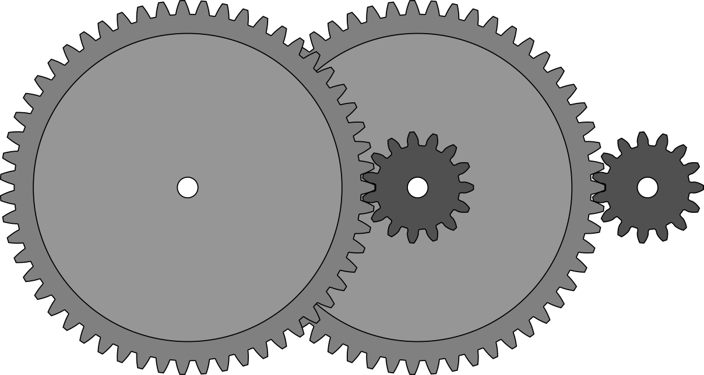

Engranajes¶
Un engranaje es un mecanismo compuesto por dos o más ruedas dentadas. Sirve para transmitir movimiento circular y para transformar la velocidad y la fuerza de giro.
Si las dos ruedas son de distinto tamaño, la rueda mayor se denomina corona y la rueda menor se denomina piñon.

Una de las aplicaciones más importantes de los engranajes es la transformación de la velocidad de giro desde un motor, generalmente rápido y con poco par motor, hasta la aplicación que ha de realizar trabajo, generalmente más lenta y con mayor par motor.
Por ejemplo con engranajes se transforma la velocidad de giro del motor de un automóvil a una velocidad menor y con mayor par motor, de las ruedas del automóvil.
Par motor¶
El par motor es equivalente a la 'fuerza' con la que gira un eje. La denominación fuerza de empuje se suele reservar para el caso de una fuerza que actúa en línea recta. En el caso de ejes giratorios, el par motor indica qué fuerza giratoria habría que aplicar a un metro de distancia del eje de giro para producir el mismo efecto.
Por ejemplo un motor de automóvil utilitario turbo diésel suele tener un par motor aproximado de 250 Newton·metro. Este par motor sería equivalente a empujar un eje giratorio con una palanca de un metro de longitud aplicando en el extremo 250 Newton (unos 25 kilogramos-fuerza).
Los engranajes aumentan el par motor (la fuerza de giro) en la misma proporción que reducen la velocidad de giro. En el caso de un engranaje que aumente la velocidad de giro, el par motor se reducirá en la misma proporción. Estas proporciones se dan en todos los mecanismos que transforman movimientos.
Un mecanismo que multiplique la fuerza, a la vez, reducirá la distancia o la velocidad del movimiento.
Cálculo de engranajes¶
La velocidad de giro de cada rueda dentada de un engranaje depende del número de dientes.
La fórmula que relaciona las velocidades de dos ruedas dentadas iguala el producto del número de dientes por la velocidad angular según la siguiente fórmula.
Siendo
Z1 = Dientes de la primera rueda dentada
N1 = Velocidad angular de la primera rueda dentada
Z2 = Dientes de la segunda rueda dentada
N1 = Velocidad angular de la segunda rueda dentada
La velocidad angular se suele medir en revoluciones por minuto también escrito como rpm, que significa el número de vueltas completas que gira la rueda en un minuto. Un motor típico suele tener una velocidad angular en un rango desde 1000 rpm hasta 6000 rpm.
Ejercicio aerogenerador¶
En este caso vamos a calcular un engranaje que sirve para multiplicar la velocidad de giro de un eje.
Un aerogenerador gira sus aspas a una velocidad de 20rpm y debe multiplicar esa velocidad hasta la velocidad del generador que es de 1000rpm. Si el piñón conectado al generador tiene 15 dientes ¿Cuántos dientes tendrá la corona?
El primer paso será escribir los datos del problema.

A continuación escribimos la fórmula y sustituimos los valores conocidos.
Por último despejamos la ecuación y calculamos el valor de la incógnita.
En la práctica, cuando la relación entre los dientes es tan grande, se suelen utilizar trenes de engranajes con más de dos ruedas conectadas entre sí para reducir o aumentar la velocidad de giro en varias etapas.
{kind=link}